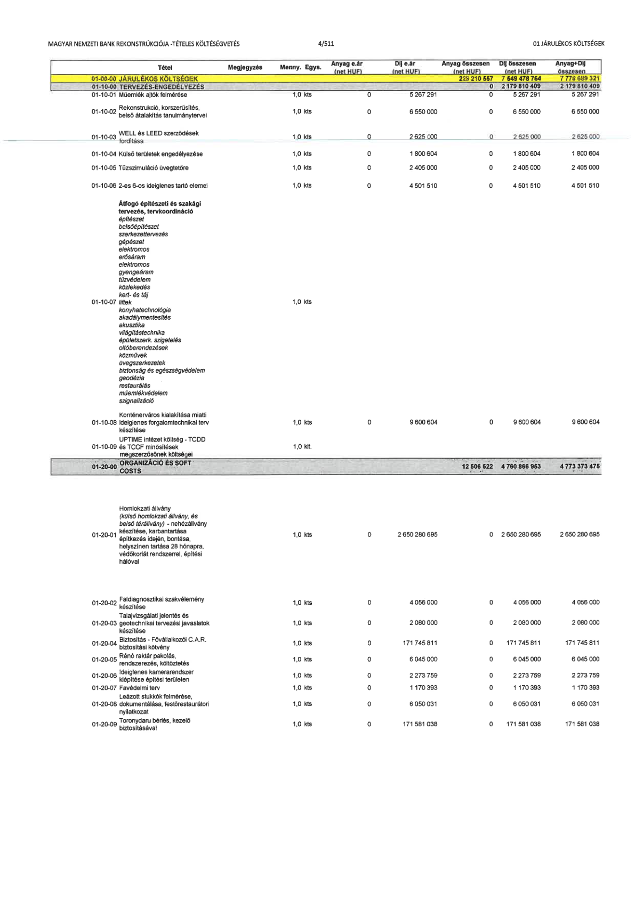

| Tétel | Megjegyzés | Menny. | Egys. | Anyag e.ár (net HUF) | Díj e.ár (net HUF) | Anyag összesen (net HUF) | Díj összesen (net HUF) | Anyag+Díj összesen |
|---|---|---|---|---|---|---|---|---|
| 01-00-00 JÁRULÉKOS KÖLTSÉGEK | NaN | NaN | NaN | 0 | 0 | 229 210 557 | 7 549 478 764 | 7 778 689 321 |
| 01-10-00 TERVEZÉS-ENGEDÉLYEZÉS | NaN | NaN | NaN | 0 | 0 | 0 | 2 179 810 409 | 2 179 810 409 |
| 01-10-01 Műemlék ajtók felmérése | NaN | 1,0 | kts | 0 | 5 267 291 | 0 | 5 267 291 | 5 267 291 |
| 01-10-02 Rekonstrukció, korszerűsítés, belső átalakítás tanulmánytervei | NaN | 1,0 | kts | 0 | 6 550 000 | 0 | 6 550 000 | 6 550 000 |
| 01-10-03 WELL és LEED szerződések fordítása | NaN | 1,0 | kts | 0 | 2 625 000 | 0 | 2 625 000 | 2 625 000 |
| 01-10-04 Külső területek engedélyezése | NaN | 1,0 | kts | 0 | 1 800 604 | 0 | 1 800 604 | 1 800 604 |
| 01-10-05 Tűzszimuláció üvegtetőre | NaN | 1,0 | kts | 0 | 2 405 000 | 0 | 2 405 000 | 2 405 000 |
| 01-10-06 2-es 6-os ideiglenes tartó elemei | NaN | 1,0 | kts | 0 | 4 501 510 | 0 | 4 501 510 | 4 501 510 |
| Átfogó építészeti és szakági tervezés, tervkoordináció (építészet, belsőépítészet, szerkezettervezés, gépészet, elektromos, erősáram, elektromos gyengeáram, tűzvédelem, közlekedés, kert- és táj) | 01-10-07 liftek, konyhatechnológia, akadálymentesítés, akusztika, világítástechnika, épületszerk. szigetelés, ollóberendezések, közművek, üvegszerkezetek, biztonság és egészségvédelem, geodézia, restaurálás, műemlékvédelem, szignalizáció | 1,0 | kts | 0 | 0 | 0 | 0 | NaN |
| 01-10-08 Konténerváros kialakítása miatti ideiglenes forgalomtechnikai terv készítése | NaN | 1,0 | kts | 0 | 9 600 604 | 0 | 9 600 604 | 9 600 604 |
| 01-10-09 UPTIME intézet költség - TCDD és TCCF minősítések megszerzésének költségei | NaN | 1,0 | klt. | 0 | 0 | 0 | 0 | NaN |
| 01-20-00 ORGANIZÁCIÓ ÉS SOFT COSTS | NaN | NaN | NaN | 0 | 0 | 12 506 522 | 4 760 866 953 | 4 773 373 475 |
| 01-20-01 Homlokzati állvány (külső homlokzati állvány, és belső térállvány) - nehézállvány készítése, karbantartása építkezés idején, bontása, helyszínen tartása 28 hónapra, védőkorlát rendszerrel, építési hálóval | NaN | 1,0 | kts | 0 | 2 650 280 695 | 0 | 2 650 280 695 | 2 650 280 695 |
| 01-20-02 Faldiagnosztikai szakvélemény készítése | NaN | 1,0 | kts | 0 | 4 056 000 | 0 | 4 056 000 | 4 056 000 |
| 01-20-03 Talajvizsgálati jelentés és geotechnikai tervezési javaslatok készítése | NaN | 1,0 | kts | 0 | 2 080 000 | 0 | 2 080 000 | 2 080 000 |
| 01-20-04 Biztosítás - Fővállalkozói C.A.R. biztosítási kötvény | NaN | 1,0 | kts | 0 | 171 745 811 | 0 | 171 745 811 | 171 745 811 |
| 01-20-05 Rénó raktár pakolás, rendszerezés, költöztetés | NaN | 1,0 | kts | 0 | 6 045 000 | 0 | 6 045 000 | 6 045 000 |
| 01-20-06 Ideiglenes kamerarendszer kiépítése építési területen | NaN | 1,0 | kts | 0 | 2 273 759 | 0 | 2 273 759 | 2 273 759 |
| 01-20-07 Favédelmi terv | NaN | 1,0 | kts | 0 | 1 170 393 | 0 | 1 170 393 | 1 170 393 |
| 01-20-08 Leázott stukkók felmérése, dokumentálása, festőrestaurátori nyilatkozat | NaN | 1,0 | kts | 0 | 6 050 031 | 0 | 6 050 031 | 6 050 031 |
| 01-20-09 Toronydaru bérlés, kezelő biztosításával | NaN | 1,0 | kts | 0 | 171 581 038 | 0 | 171 581 038 | 171 581 038 |
